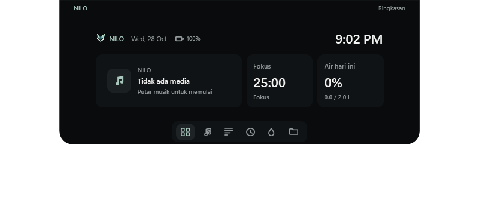

Media & lirik
Jeda, lanjut, pindah lagu, dan cari lirik tersinkron dari LRCLIB. Dukungan kontrol mengikuti sesi media Windows dari pemutar yang digunakan.
WINDOWS DESKTOP APP
Kontrol musik, baca lirik, dan simpan file sementara. Langsung dari tepi atas layar.
Memeriksa installer…
Windows 10 / 11 — Antarmuka aktual, tanpa data media buatan.Ringkasan musik, sisa waktu fokus, dan jumlah air hari ini. Arahkan kursor ke notch untuk membuka; jauhkan untuk menutup otomatis.
FITUR
Jeda, lanjut, pindah lagu, dan cari lirik tersinkron dari LRCLIB. Dukungan kontrol mengikuti sesi media Windows dari pemutar yang digunakan.
Jalankan sesi Pomodoro dan lihat waktu yang tersisa dari notch. Pengaturan tersedia melalui menu aplikasi di tray Windows.
Catat jumlah air yang diminum, tentukan target harian, dan atur pengingat. Riwayat disimpan lokal di komputer.
Tarik file atau folder ke notch, lalu buka atau seret keluar saat diperlukan. Menghapus item Shelf tidak menghapus file asli.
NILO menyimpan diri ke tepi atas saat aplikasi lain aktif. Arahkan kursor ke tengah tepi atas untuk memunculkannya. Sematkan dari tray jika ingin tetap terlihat.
Dock opsional dengan pencarian aplikasi, sematan, jendela berjalan, jam dan kalender. Aktifkan melalui Settings → Desktop. Taskbar Windows tetap tersedia.
DOWNLOAD
Unduh .exe, buka, baca lisensi, lalu pilih Pasang NILO. Runtime aplikasi sudah disertakan.
Memeriksa file unduhan.
Rilis ini belum ditandatangani digital. Windows dapat menampilkan peringatan penerbit tidak dikenal.
Belum tersedia
Belum tersediaPEMBARUAN APLIKASI
PEMASANGAN
Simpan file dari tombol unduh. Tidak perlu mengekstrak ZIP atau memasang runtime terpisah.
Installer menampilkan lisensi MIT dan lokasi pemasangan. NILO dipasang untuk pengguna Windows yang sedang login.
Gunakan ikon NILO di tray untuk pengaturan layar, ukuran, pengingat, dan opsi mulai bersama Windows.
LISENSI APLIKASI
NILO dan penyesuaiannya didistribusikan dengan lisensi MIT. Pengembang: Kographh By Fizzxverss. Fondasi NusaLite: Pidzzzz. Teks lisensi dan pemberitahuan runtime tersedia di installer serta folder aplikasi.
Baca teks lisensi lengkapFAQ
Installer membawa runtime dan dapat memasang NILO tanpa mengunduh dependensi. Timer, air, pengaturan, dan Shelf bekerja lokal. Pencarian lirik dan artwork membutuhkan koneksi internet dan dapat mengirim metadata lagu ke penyedia terkait.
NILO membaca sesi media Windows. Kontrol dan metadata bergantung pada dukungan pemutar sumber. Lirik memerlukan kecocokan data dari LRCLIB. Jika tidak ada media atau lirik, aplikasi menampilkan keadaan kosong.
Aplikasi dipasang di %LOCALAPPDATA%\Programs\NILO. Pengaturan dan riwayat tetap di %APPDATA%\Vyra untuk kompatibilitas. Shelf tidak mengunggah file dan hanya menyimpan referensi selama sesi.
Keluar melalui tray → Quit NILO sebelum menjalankan installer baru. Untuk menghapus, gunakan Settings → Apps Windows atau Uninstall.exe di folder instalasi. File tambahan, file yang sudah Anda ubah, dan data AppData dipertahankan. Uninstall.exe yang sedang berjalan dapat tersisa dan dihapus manual.
Gunakan SHA-256 untuk mencocokkan file yang Anda unduh dengan file rilis di halaman ini. Nilai yang cocok menunjukkan kesamaan file; bukan sertifikasi atau hasil pemindaian antivirus.